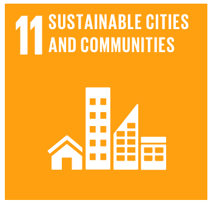

Goal 11: Make cities inclusive, safe, resilient and sustainable

Cities are hubs for ideas, commerce, culture, science, productivity, social development and much more. At their
best, cities have enabled people to advance socially and economically.
However, many challenges exist to maintaining cities in a way that continues to create jobs and prosperity while
not straining land and resources. Common urban challenges include congestion, lack of funds to provide basic services,
a shortage of adequate housing and declining infrastructure.
The challenges cities face can be overcome in ways that allow them to continue to thrive and grow, while improving
resource use and reducing pollution and poverty. The future we want includes cities of opportunities for all, with
access to basic services, energy, housing, transportation and more.
Goals Targets
1) By 2030, ensure access for all to adequate, safe and affordable housing and basic services and upgrade slums.
2) By 2030, provide access to safe, affordable, accessible and sustainable transport systems for all, improving
road safety, notably by expanding public transport, with special attention to the needs of those in vulnerable
situations, women, children, persons with disabilities and older persons.
3) By 2030, enhance inclusive and sustainable urbanization and capacity for participatory, integrated and sustainable
human settlement planning and management in all countries.
4) Strengthen efforts to protect and safeguard the world’s cultural and natural heritage.
5) By 2030, significantly reduce the number of deaths and the number of people affected and substantially decrease
the direct economic losses relative to global gross domestic product caused by disasters, including water-
related disasters, with a focus on protecting the poor and people in vulnerable situations.
6) By 2030, reduce the adverse per capita environmental impact of cities, including by paying special attention to
air quality and municipal and other waste management.
7) By 2030, provide universal access to safe, inclusive and accessible, green and public spaces, in particular for
women and children, older persons and persons with disabilities.
8) Support positive economic, social and environmental links between urban, peri-urban and rural areas by strengthening
national and regional development planning.
9) By 2020, substantially increase the number of cities and human settlements adopting and implementing integrated policies
and plans towards inclusion, resource efficiency, mitigation and adaptation to climate change, resilience to disasters,
and develop and implement, in line with the Sendai Framework for Disaster Risk Reduction 2015-2030, holistic disaster risk
management at all levels.
10) Support least developed countries, including through financial and technical assistance, in building sustainable and resilient
buildings utilizing local materials.